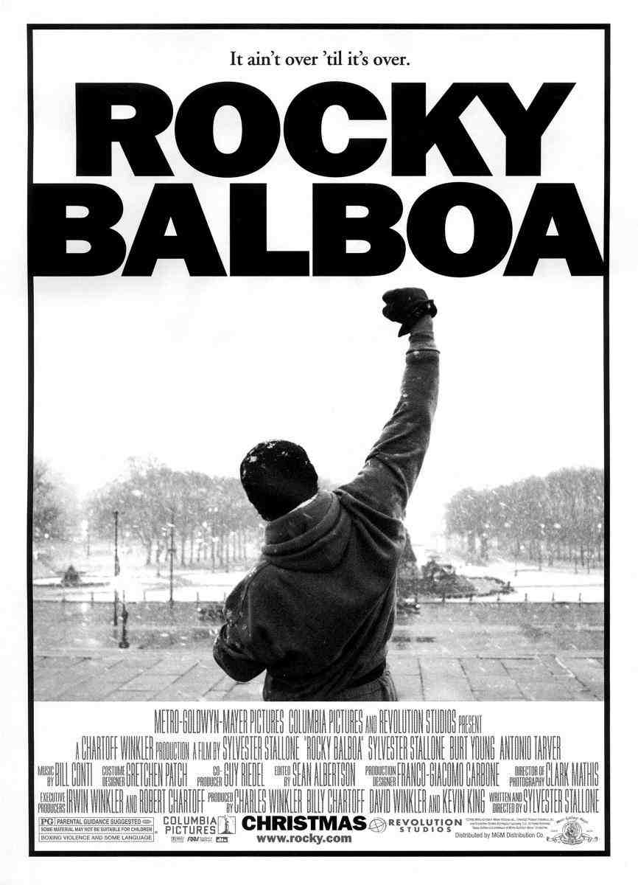
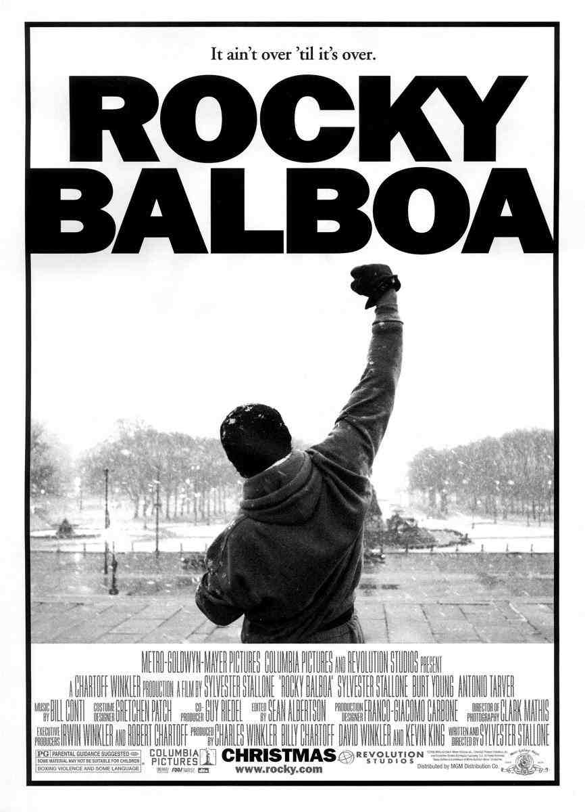

Curiosidades sobre la Saga de Rocky
1.- El guion de Rocky fue escrito en solo tres días
Sylvester Stallone escribió el guion de la primera película de Rocky en tan solo tres días y medio. Su inspiración vino después de ver una pelea entre Muhammad Ali y Chuck Wepner.
2.- Stallone insistió en interpretar a Rocky
Stallone rechazó vender el guion a varios estudios que querían poner a un actor conocido en el papel principal. Finalmente, United Artists accedió a dejar que Stallone interpretara a Rocky, con un presupuesto reducido.
3.- La escena del entrenamiento en las escaleras
La icónica escena de Rocky corriendo por las escaleras del Museo de Arte de Filadelfia fue filmada sin permisos oficiales. La mayoría de las personas que aparecen en la escena no eran extras, sino transeúntes reales.
4.- Inspiración para la estatua de Rocky
La estatua de Rocky en Filadelfia fue originalmente un accesorio creado para la película "Rocky III". Después de la filmación, fue donada a la ciudad y se ha convertido en un punto turístico popular.
5.- Rocky Balboa y los premios
La primera película de Rocky ganó tres Premios de la Academia en 1977, incluyendo Mejor Película, Mejor Director y Mejor Montaje. Fue una sorpresa ya que compitió contra películas muy fuertes como "Taxi Driver" y "Network".
6.- La mascota de Rocky, Butkus
Butkus, el perro de Rocky, era en realidad el perro de Sylvester Stallone en la vida real. Stallone lo recuperó tras venderlo en tiempos difíciles.